10 Years of Firefox
Michael Kohler, Mozilla Rep
@KohlerSolutions
or
mkohler@picobudget.com
10 Years of Firefox
Michael Kohler, Mozilla Rep, #fx10 Zurich, 17.11.2014
10 years?
Thanks to liip
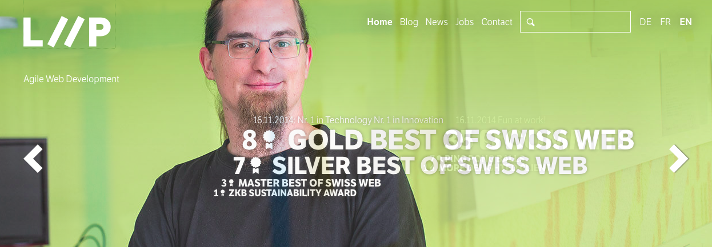
@MozillaCH
Netscape
Project Seamonkey
Mozilla Application Suite
Mozilla Application Suite - m4
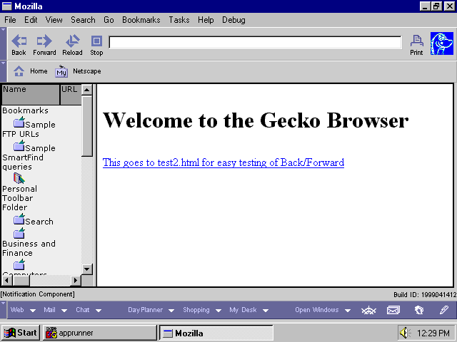
Navigator (Browser)
Communicator (Mail)
Composer
IRC (ChatZilla)
"Code Rush"
SeaMonkey
Phoenix
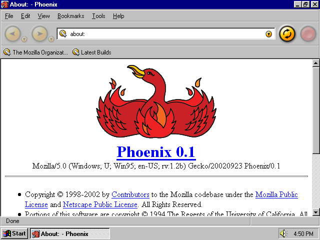
Firebird
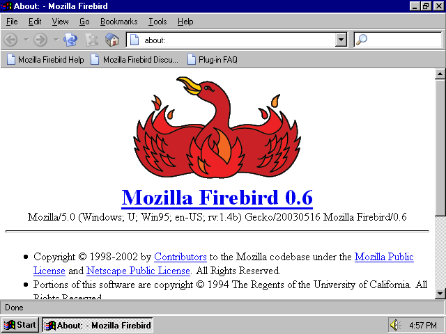
Firefox 1.0
9.11.2004
Firefox
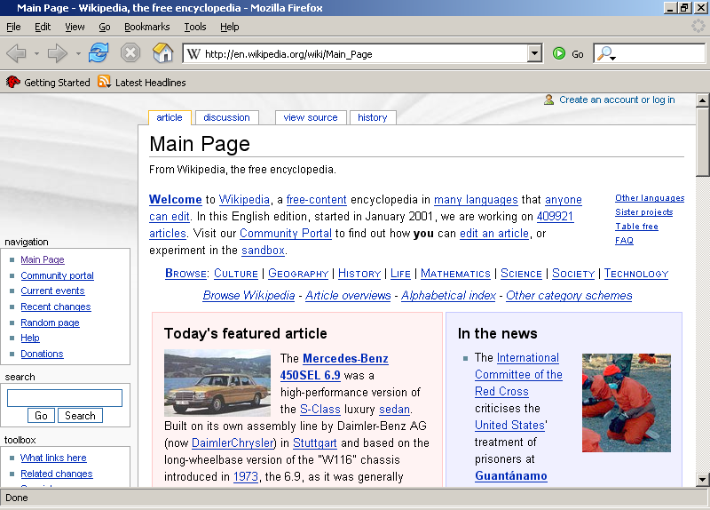
New York Times - 2004
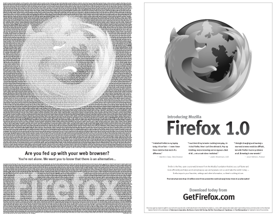
Important Milestones
Firefox 3 (July 2008)
Guinness World Record!
Rapid Release
Firefox 10 (ESR)
Firefox 29 (Australis)
Australis
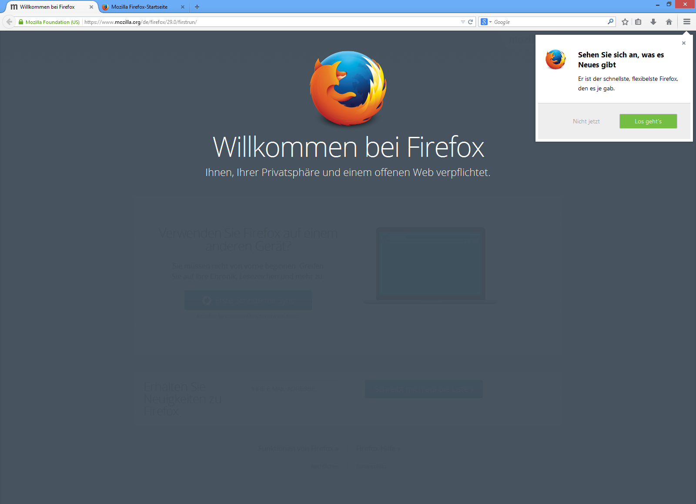
Firefox 33.1
Forget Button
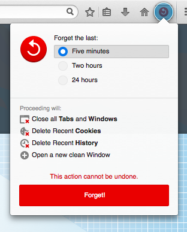
Enhanced Tiles
DuckDuckGo
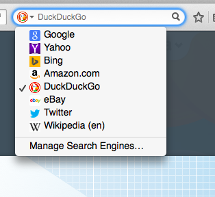
Firefox Channels
Release
Beta
Developer Edition (previously Aurora)
Nightly
10 Years of Firefox
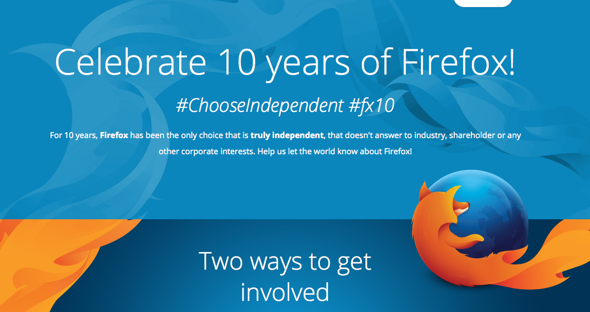
Choose Independent (Video)
Firefox is slow?
Developer Tools: a quick peak
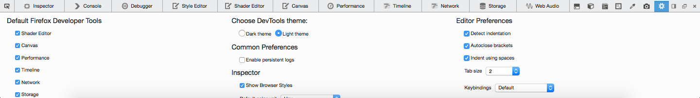
What else?
Firefox OS
Firefox for Android
Thunderbird (Community)
Bugzilla
Webmaker
NSS
Advocacy & Privacy
..and more
..and now?
Cake and beer!
Thanks!
Michael Kohler
Mozilla Reps
@KohlerSolutions
Photo by Yortw